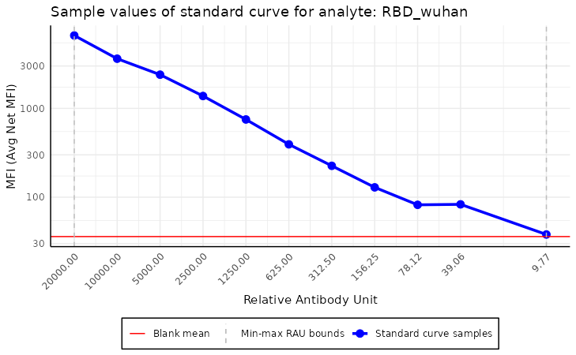
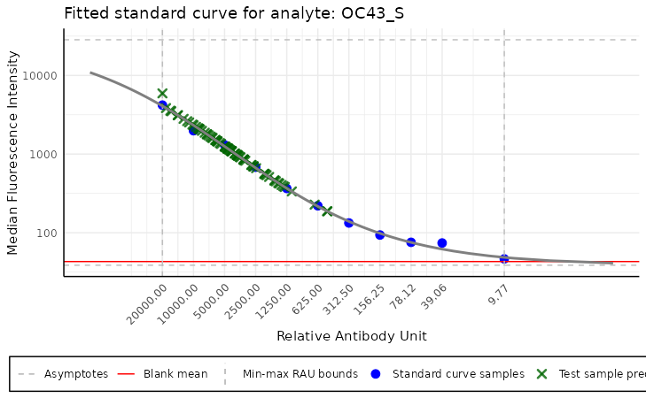
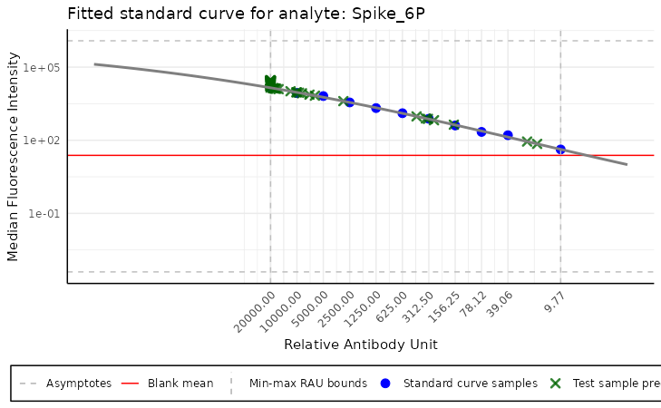

Basic SerolyzeR functionalities
Tymoteusz Kwieciński
2025-03-20
Source:vignettes/example_script.Rmd
example_script.RmdReading the plate object
The basic functionality of the SerolyzeR package is
reading raw MBA data. To present the package’s functionalities, we use a
sample dataset from the Covid OISE study, which is pre-loaded into the
package. You might want to replace these variables with paths to your
files on your local disk, to test the package on your data.
Firstly, let us load the dataset as the [Plate]
object.
library(SerolyzeR)
plate_filepath <- system.file("extdata", "CovidOISExPONTENT.csv", package = "SerolyzeR", mustWork = TRUE) # get the filepath of the csv dataset
layout_filepath <- system.file("extdata", "CovidOISExPONTENT_layout.xlsx", package = "SerolyzeR", mustWork = TRUE)
plate <- read_luminex_data(plate_filepath, layout_filepath) # read the data#> Reading Luminex data from: /home/runner/work/_temp/Library/SerolyzeR/extdata/CovidOISExPONTENT.csv
#> using format xPONENT#>
#> New plate object has been created with name: CovidOISExPONTENT!
#>
plate#> Plate with 96 samples and 30 analytesThe [Plate] is an object which encapsulates all the
information about the plate, such as the sample names, analyte names,
and the MFI values. For more details about the object, check the
documentation by executing the command ?Plate.
The read_luminex_data function used above, reads the
data from the CSV plate file and the layout file and outputs the
[Plate] object. This method allows also for more advanced
options, such as overriding the information from the files, or setting
the data reading options, e.g. the Luminex file format
(xPONENT or INTELLIFLEX) or the file
separators and data encoding. For more details about the function, we
encourage you to explore the documentation by executing the command
?read_luminex_data.
It also detects automatically the sample types, using an internal
method [translate_sample_names_to_sample_types]. The method
uses the sample names, sourced either from the layout file or the CSV
plate file, to determine the sample types. The types of samples are then
stored in the sample_types field of the plate object. The
sample types are used to distinguish between the standard curve samples,
control samples and the test samples. The documentation of this function
contains more details about the sample types detection.
Processing the whole plate
Once we have loaded the plate object, we may process it using the
function [process_plate]. This function fits a model to
each analyte using the standard curve samples. By default, it computes
RAU values for each analyte using the corresponding model. The computed
RAU values are then saved to a CSV file in a specified folder with the
parameter output_dir in a file with specified name
filename, which by default is based on the plate name and
the normalisation type - this function also allows normalisation for
nMFI values, more details about this method may be found in the
nMFI section of this document, or in documentation of
?get_nmfi function.
This function fits a model to each analyte using the standard curve
samples. By default, it computes Relative Antibody Units (RAU) for each
analyte based on the fitted model. The computed RAU values are saved to
a CSV file in a directory specified by the output_dir
parameter. The output file is named according to the
filename parameter. If no filename is provided, the
function automatically generates one based on the plate name and the
selected normalisation type.
Additionally, this function supports normalisation for normalised
Median Fluorescence Intensity (nMFI) values. More details on this
normalisation approach can be found in the nMFI section of
this document or in the documentation of [get_nmfi()].
To get more information about the function, check
?process_plate.
Below, we execute the function on the plate object and save the output to a temporary directory.
example_dir <- tempdir(check = TRUE) # create a temporary directory to store the output
df <- process_plate(plate, output_dir = example_dir)#> Fitting the models and predicting RAU for each analyte#> Saving the computed RAU values to a CSV file located in: '/tmp/RtmpD6hmab/CovidOISExPONTENT_RAU.csv'
colnames(df)#> [1] "Spike_6P" "ME" "HKU1_S" "OC43_NP"
#> [5] "OC43_S" "HKU1_NP" "X229E_NP" "Mumps_NP"
#> [9] "RBD_B16171" "NL63_NP" "RBD_B16172" "RBD_wuhan"
#> [13] "NL63_S" "X229E_S" "Spike_B16172" "Spike_B117"
#> [17] "Measles_NP" "Ade5" "NP" "Spike_P1"
#> [21] "Rub" "Ade40" "RBD_B117" "Spike_B1351"
#> [25] "FluA" "RBD_B1351" "RBD_P15" "S2"
#> [29] "Spike_omicron" "RBD_omicron"We can take a look at a slice of the produced dataframe (as not to overcrowd the article).
df[1:5, 1:5]#> Spike_6P ME HKU1_S OC43_NP OC43_S
#> CO-F-226-01-CF 20000.00 5768.628 829.2993 4289.2647 6871.6113
#> CO-F-263-02-KC 20000.00 4050.148 8128.2569 3681.9063 8828.6351
#> CO-F-080-02-TV 20000.00 5889.229 15877.9572 1473.4541 11012.7498
#> CO-F-215-01-BA 20000.00 10446.952 6069.3115 828.9687 1116.0059
#> CO-H-SD-039-BC 17665.36 2656.989 4055.8890 990.4044 670.7302To automate the processing the plates, we can also use
[process_file] and [process_dir] methods. The
former processes a single file, while the latter processes all the files
in a directory.
[process_file] parses the plate file and saves the
normalised output files to the specified directory. An example execution
of the function is shown below.
process_file(plate_filepath, layout_filepath, output_dir = example_dir, generate_report = FALSE)#> Reading Luminex data from: /home/runner/work/_temp/Library/SerolyzeR/extdata/CovidOISExPONTENT.csv
#> using format xPONENT#>
#> New plate object has been created with name: CovidOISExPONTENT!
#>
#> Processing plate 'CovidOISExPONTENT'
#> Extracting the raw MFI to the output dataframe
#> Saving the computed MFI values to a CSV file located in: '/tmp/RtmpD6hmab/CovidOISExPONTENT_MFI.csv'#> Fitting the models and predicting RAU for each analyte#> Saving the computed RAU values to a CSV file located in: '/tmp/RtmpD6hmab/CovidOISExPONTENT_RAU.csv'
#> Computing nMFI values for each analyte
#> Saving the computed nMFI values to a CSV file located in: '/tmp/RtmpD6hmab/CovidOISExPONTENT_nMFI.csv'#> Plate with 96 samples and 30 analytesIt saves RAU and nMFI values to the
output_dir, working similarly to the
[process_plate] function. Additionally it has an option to
produce a single plate report, which can be enabled with
generate_report = TRUE parameter. The report is saved in
the same directory as the output files, with the name based on the plate
name. For more detailed description of the reports, we refer to the
vignette .
[process_dir] processes all the files in the specified
directory. The description of this method can be found in the separate
vignette vignette(“Multiplate SerolyzeR functionalities”).
Quality control and normalisation details
Apart from the process_plate function, the package
provides a set of methods allowing for more detailed and advanced
quality control and normalisation of the data.
Plate summary and details
After the plate is successfully loaded, we can look at some basic information about it.
plate$summary()#> Summary of the plate with name 'CovidOISExPONTENT':
#> Plate examination date: 2022-05-11 16:45:00
#> Total number of samples: 96
#> Number of blank samples: 1
#> Number of standard curve samples: 11
#> Number of positive control samples: 0
#> Number of negative control samples: 0
#> Number of test samples: 84
#> Number of analytes: 30
plate$summary(include_names = TRUE) # more detailed summary#> Summary of the plate with name 'CovidOISExPONTENT':
#> Plate examination date: 2022-05-11 16:45:00
#> Total number of samples: 96
#> Number of blank samples: 1
#> Number of standard curve samples: 11
#> Sample names: '1/50', '1/100', '1/200', '1/400', '1/800', '1/1600', '1/3200', '1/6400', '1/12800', '1/25600', '1/102400'
#> Number of positive control samples: 0
#> Number of negative control samples: 0
#> Number of test samples: 84
#> Number of analytes: 30
plate$sample_names[1:5] # print some of the sample names#> [1] "B" "1/50" "1/100" "1/200" "1/400"
plate$analyte_names[1:4] # print some of the analyte names#> [1] "Spike_6P" "ME" "HKU1_S" "OC43_NP"The summary can also be accessed using the built-in generic method
summary.
summary(plate)#> Summary of the plate with name 'CovidOISExPONTENT':
#> Plate examination date: 2022-05-11 16:45:00
#> Total number of samples: 96
#> Number of blank samples: 1
#> Number of standard curve samples: 11
#> Number of positive control samples: 0
#> Number of negative control samples: 0
#> Number of test samples: 84
#> Number of analytes: 30Quality control
The package can plot the RAU along the MFI values, allowing manual inspection of the standard curve.
plot_standard_curve_analyte(plate, analyte_name = "OC43_S")
We can also plot the standard curve for different analytes and data
types. A list of all available analytes on the plate can be accessed
using the command plate$analyte_names.
By default, all the operations are performed on the
Median value of the samples; this option can be selected
from the data_type parameter of the function.
plot_standard_curve_analyte(plate, analyte_name = "RBD_wuhan", data_type = "Mean")
plot_standard_curve_analyte(plate, analyte_name = "RBD_wuhan", data_type = "Avg Net MFI")
This plot may be used to assess the standard curve’s quality and
anticipate some potential issues with the data. For instance, if we
plotted the standard curve for the analyte, ME, we could
notice that the Median value of the sample with RAU of
39.06 is abnormally large, which may indicate a problem
with the data.
plot_standard_curve_analyte(plate, analyte_name = "ME")
plot_standard_curve_analyte(plate, analyte_name = "ME", log_scale = "all")
The plotting function has more options, such as selecting which axis
the log scale should be applied or reversing the curve. More detailed
information can be found in the function documentation, accessed by
executing the command ?plot_standard_curve_analyte.
Another valuable method of inspecting the potential errors of the
data is plot_mfi_for_analyte. This method plots the MFI
values of standard curve samples for a given analyte along the boxplot
of the MFI values of the test samples.
It helps identify the outlier samples and check if the test samples are within the range of the standard curve samples.
plot_mfi_for_analyte(plate, analyte_name = "OC43_S")
plot_mfi_for_analyte(plate, analyte_name = "Spike_6P")
For the Spike_6P analyte, the MFI values don’t fall
within the range of the standard curve samples, which could be
problematic for the model. The test RAU values will be extrapolated (up
to a point) from the standard curve, which may lead to incorrect
results.
The package allows also a straightforward way to adjust the MFI
values using the background samples. To do so, we can use the
plate$blank_adjustment method, as below:
plate$blank_adjusted # verify if the data is already adjusted#> [1] FALSE
plate$blank_adjustment()#> Plate with 96 samples and 30 analytesNormalisation
After inspection, we may create the model for the standard curve of a
specific antibody. The model is fitted using the nplr
package, which provides a simple interface for fitting n-parameter
logistic regression models. Still, to create a more straightforward
interface for the user, we encapsulated this model into our own class
called Model for simplicity. The detailed documentation of
the Model class can be found by executing the command
?Model.
The model is then used to predict the RAU values of the samples based on the MFI values.
RAU vs dilution
To distinguish between actual dilution values (the ones known for the standard curve samples) from the dilution predictions (obtained using the fitted standard curve), we introduced into our package a unit called RAU (Relative Antibody Unit) which is equal to the dilution prediction multiplied by a to provide a more readable value.
Inner nplr model
nplr package fits the model using the formula:
where:
is the predicted value, MFI in our case,
is the independent variable, dilution of the standard curve samples in our case,
is the bottom plateau - the right horizontal asymptote,
is the top plateau - the left horizontal asymptote,
is the slope of the curve at the inflection point,
is x-coordinate at the inflection point,
is the asymmetric coefficient.
This equation is referred to as the Richards’ equation. More
information about the model can be found in the nplr
package documentation.
Predicting RAU
By reversing that logistic function, we can predict the dilution of the samples based on the MFI values. The RAU value is then the predicted dilution of the sample multiplied by .
To limit the extrapolation error from above (values above maximum RAU
value for the standard curve samples), we clip all predictions above to
where over_max_extrapolation is user controlled parameter
to the predict function. By default
over_max_extrapolation is set to
.
Warning: High dose hook effect affects the prediction truncation (clipping).
When a high dose hook effect is detected we exclude from standard curve calculations the samples that have dilutions higher or equal to 1/200. This will cause a truncation of values to the next greatest dilution multiplied by .
Usage
By default, the nplr model transforms the x values using
the log10 function. To create a model for a specific analyte, we use the
create_standard_curve_model_analyte function, which fits
and returns the model for the analyte.
model <- create_standard_curve_model_analyte(plate, analyte_name = "OC43_S")
model#> Instance of the Model class fitted for analyte ' OC43_S ':
#> - fitted with 5 parameters
#> - using 11 samples
#> - using log residuals (mfi): TRUE
#> - using log dilution: TRUE
#> - top asymptote: 28414.96
#> - bottom asymptote: 38.60885
#> - goodness of fit: 0.9970645
#> - weighted goodness of fit: 0.9998947Since our model object contains all the characteristics
and parameters of the fitted regression model. The model can be used to
predict the RAU values of the samples based on the MFI values. The
output above shows the most critical parameters of the fitted model.
The predicted values may be used to plot the standard curve, which can be compared to the sample values.
plot_standard_curve_analyte_with_model(plate, model, log_scale = c("all"))
plot_standard_curve_analyte_with_model(plate, model, log_scale = c("all"), plot_asymptote = FALSE)As we can see below, when predicting RAU for analytes for which we observed the high dose hook effect, the truncation level changes to a RAU value corresponding to a first sample with dilution below 1/200 (1/400 in this case, RAU = 2500).
model_hdh <- create_standard_curve_model_analyte(plate, analyte_name = "RBD_omicron")
plot_standard_curve_analyte_with_model(plate, model_hdh, log_scale = c("all"))
Apart from the plotting, the package can predict the values of all the samples on the plate.
mfi_values <- plate$data$Median$OC43_S
head(mfi_values)#> [1] 43.0 4193.0 1982.0 1308.0 681.0 365.5#> RAU MFI
#> 1 2.375258 43.0
#> 2 20000.000000 4193.0
#> 3 8326.658518 1982.0
#> 4 5240.371360 1308.0
#> 5 2556.577252 681.0
#> 6 1242.668884 365.5The dataframe contains original MFI values and the predicted RAU values based on the model.
In order to allow extrapolation from above (up to a certain value) we
can set over_max_extrapolation to a positive value. To
illustrate that we can look at prediction plots. The
plot_standard_curve_analyte_with_model takes any additional
parameters and passes them to a predict method so we can
visually see the effect of the over_max_extrapolation
parameter.
model <- create_standard_curve_model_analyte(plate, analyte_name = "Spike_6P")
plot_standard_curve_analyte_with_model(plate, model, log_scale = c("all"))
plot_standard_curve_analyte_with_model(plate, model, log_scale = c("all"), over_max_extrapolation = 100000)
nMFI
In some cases, the RAU values cannot be reliably calculated. This may happen when the MFI values of test samples are way higher than those of the standard curve samples. In that case, to avoid extrapolation but to be still able to compare the samples across the plates, we introduced a new unit called nMFI (Normalized MFI). The nMFI is calculated as the MFI value of the test sample divided by the MFI value of the standard curve sample with the selected dilution value.
nMFI values of the samples can be calculated in two ways - using the
get_nmfi function or with the process_plate
function that also saves the output into the CSV file by setting the
normalisation_type parameter to nMFI in the
process_plate function. By default the output will be saved
as a file with the same name as the plate name but with the
_nMFI suffix.
nmfi_values <- get_nmfi(plate)
# process plate with nMFI normalisation
df <- process_plate(plate, output_dir = example_dir, normalisation_type = "nMFI")#> Computing nMFI values for each analyte
#> Saving the computed nMFI values to a CSV file located in: '/tmp/RtmpD6hmab/CovidOISExPONTENT_nMFI.csv'
df[1:5, 1:5]#> Spike_6P ME HKU1_S OC43_NP OC43_S
#> CO-F-226-01-CF 5.842408 1.988889 0.3821903 1.5449180 2.4537445
#> CO-F-263-02-KC 7.171064 1.471111 2.6996681 1.3481967 3.0638767
#> CO-F-080-02-TV 7.169239 2.024444 4.6227876 0.6085246 3.7077827
#> CO-F-215-01-BA 7.586304 3.288889 2.1028761 0.3816393 0.4919236
#> CO-H-SD-039-BC 3.695481 1.037778 1.4778761 0.4393443 0.3340675